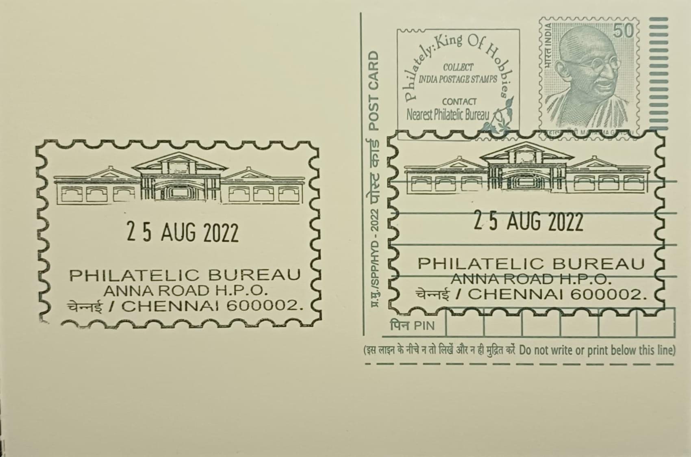

Anna Road Post Office (Warwick Electric Theatre)
அண்ணா சாலை அஞ்சலகம் (வார்விக் எலெக்ட்ரிக் தியேட்டர்)


The Warwick Electric Theatre took its name from its founder, Warwick Major, who put up the building on Mount Road, now Anna Salai, in 1913 as a dedicated venue for screening silent films. It was among the earliest structures in Madras raised purely as a commercial cinema hall rather than adapted from an existing building, placing it at the very start of organised film exhibition in the city. Its site, at the edge of what was then the colonial administrative and commercial quarter of Madras, put it within easy reach of the European residents and officials who formed much of its early audience.
As a pioneering single-screen cinema, the Electric Theatre holds a place in the early history of exhibition in South India, predating the large purpose-built theatres such as Gaiety, Wellington and Casino that would later line the same stretch of Mount Road. It was reportedly a favoured haunt of the British community in Madras, reflecting the social role cinema halls played in the early twentieth century as venues not just for entertainment but for a particular stratum of colonial urban life. Its significance today rests less on scale than on precedence, as one of the handful of named halls whose existence is documented in accounts of Madras's earliest cinema-going era.
Accounts of the theatre's operations indicate it ran successfully for a comparatively short span, often cited as around 21 months, before the building and its plot were taken over for postal use, a transition that effectively ended its life as a cinema rather than seeing it demolished for a later commercial structure as happened to several of its contemporaries. The property was absorbed into what grew into a post office complex on Anna Salai, meaning the physical fabric associated with the theatre's site passed directly into government institutional use rather than private redevelopment, a comparatively unusual trajectory among Mount Road's early cinema plots.
A distinguishing feature of the Warwick's story is how closely it is bound up with the subsequent postal history of the plot: unlike the Wellington, which was razed for the Wellington Plaza commercial complex, or several other Mount Road halls lost to multiplexes and retail development, the Electric Theatre's location survives in institutional memory chiefly because the post office that replaced it retained the connection in local record and naming. This gives Anna Road Post Office an unusual distinction among Chennai post offices in having its site history traceable to a specific, named early cinema rather than to a purely administrative origin.
Anna Salai itself remains Chennai's principal arterial road for commerce, government offices and cultural institutions, and the post office that now occupies the former theatre's ground continues to function as an active delivery and counter-service office serving this corridor, officially recorded as Anna Road HO under PIN 600002. Local chroniclers of Madras's cinema history, including writers for Madras Musings and similar heritage publications, periodically revisit the Warwick and its vanished contemporaries in documenting the city's lost entertainment landmarks. The post office's day-to-day business goes on much as it did when the site changed hands decades ago, with the cinema's name surviving now mainly as a historical footnote attached to the address.
| Date of Introduction | March 31, 1998 |
|---|---|
| Address | Senior Postmaster, |
| Anna Road HO, | |
| Chennai (dt.), Tamil Nadu - 600002. |